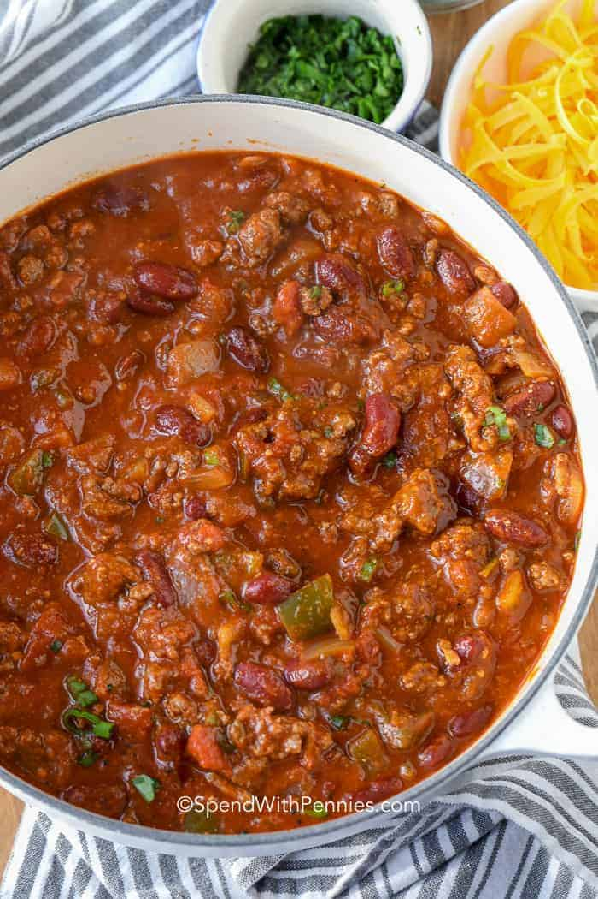

Easy Chili

Description
A quick and easy chili that tastes great!
Ingredients
- 2 lbs hot Italian sausage
- 2 lbs ground sirloin
- 1 large onion, chopped
- 1 red bell pepper, chopped
- 1 yellow bell pepper, chopped
- 1 green bell pepper, chopped
- 8 cloves of garlic, minced
- 2 jalapeno peppers, finely chopped
- 3 tbsp chili powder
- 2 tbsp brown sugar
- 1 tbsp ground cumin
- 1(6oz) can tomato paste
- 2 tsp dried oregano
- 1/4 tsp salt
- 1/2 tsp freshly ground black pepper
- 2 bay leaves
- 2 cups Merlot or other dry red wine
- 2(28oz) cans whole tomatoes, undrained and chopped
- 2(15oz) cans dark red kidney beans, drained
- 1(15oz) can tomato sauce
- 3 chipotle peppers in adobo sauce, chopped
Steps
- Heat a large skillet over medium-high heat and stir in Italian sausage and ground sirloin. Cook and stir until meat is crumbly, evenly browned, and no longer pink. Drain and discard any excess grease.
- Transfer meat to a large Dutch oven; place over medium-high heat. Stir in chopped onion; add red, yellow, and green bell peppers, garlic, and jalapeno peppers. Cook and stir until onion is translucent, about 5 minutes.
- Mix in chili powder, brown sugar, cumin, tomato paste, oregano, salt, black pepper, and bay leaves. Cook and stir until fragrant, about 3 minutes more.
- Stirring constantly, pour in wine, chopped tomatoes and their juice, kidney beans, tomato sauce, and chopped chipotle chiles in sauce. Bring to a boil. Cover, reduce heat to low, and simmer, stirring occasionally, for 1 hour.
- Uncover and simmer, stirring occasionally, until thickened, about 30 minutes. Discard bay leaves before serving.